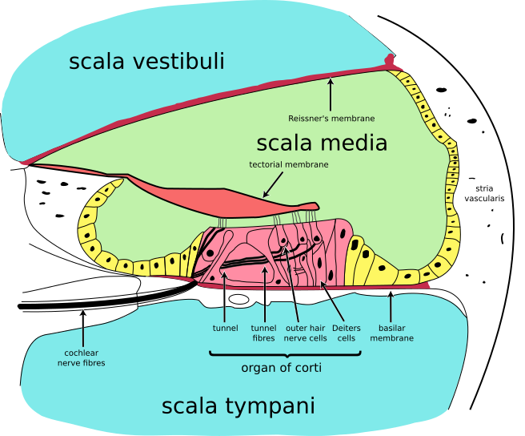
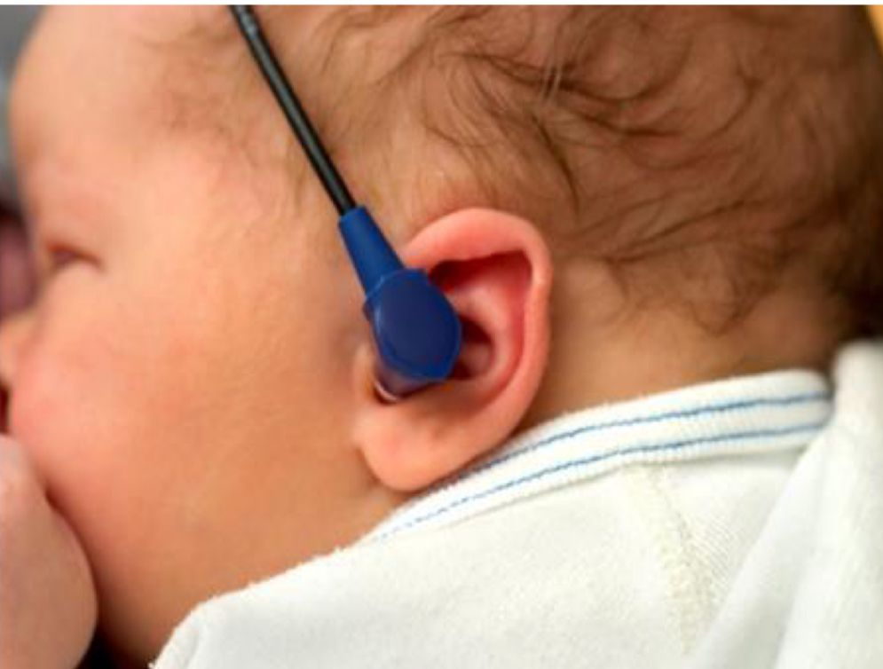

Por que o teste da orelhinha é obrigatório — e o que mudou em 29 de novembro de 2025
29 / NOV / 2025
O Ministério da Saúde publicou o novo Guia Nacional da Triagem Auditiva Neonatal, lançado no 33º Congresso Brasileiro de Fonoaudiologia em São Paulo. Substituiu as diretrizes de 2012. Em 13 anos, o que estava sedimentado foi reorganizado. Mudança vinda do MS em ano corrente é candidato forte a cobrança em residência no fim do ciclo.
Triagem auditiva neonatal é um tema específico dentro do Programa Nacional de Triagem Neonatal e merece aprofundamento próprio. Em 2025 o Ministério da Saúde modificou o Guia do Programa de Triagem Auditiva na Criança — alguns conceitos que estavam bem sedimentados foram redefinidos, e isso vira ponto provável de questão no final do ano. Mudança vinda do MS em ano corrente, com listas reorganizadas e prazos atualizados, é candidato forte a cobrança em residência.
Popularmente o teste é chamado de teste da orelhinha. É o mesmo apelido pediátrico identitário que ancora o tema desde a introdução em M4 §4.7. Cuidado terminológico: "teste da orelhinha" e "triagem auditiva neonatal" funcionam como sinônimos no uso popular, mas nem todo teste de triagem auditiva é o teste da orelhinha. Existem testes diferentes dentro da triagem auditiva neonatal — o apelido refere-se principalmente a um deles (a emissão otoacústica — detalhada em 5.8).
A triagem auditiva neonatal não é opcional. Toda criança nascida tem direito de realizá-la, e a equipe assistencial tem o dever de oferecê-la. A obrigatoriedade em todos os hospitais e maternidades do Brasil é estabelecida pela Lei 12.303, de 2 de agosto de 2010.
Por que a obrigatoriedade é tão dura? Por causa do impacto da detecção precoce. Distúrbio auditivo não diagnosticado precocemente eleva o risco de transtorno de linguagem e distúrbio do desenvolvimento — incluindo desenvolvimento social, aquisição de linguagem, e a relação da criança com o mundo. Quanto mais cedo se identifica a perda auditiva, mais cedo se intervém — com aparelho de amplificação sonora individual (AASI), implante coclear quando indicado, terapia fonoaudiológica, estimulação ambiental. A janela é decisiva: cérebro auditivo em desenvolvimento responde de forma muito diferente à intervenção antes dos 6 meses do que depois.
Detecção precoceTriagem universal nas primeiras 48h
Intervenção precoceAASI · implante coclear · fono
Boa aquisição de linguagemJanela < 6 meses
Desenvolvimento preservadoSocial · cognitivo · escolar
Cada elo dessa cadeia justifica o esforço de manter o teste universal, obrigatório e padronizado. Por isso o Guia MS 2025 não admite exceções: mesmo a criança sem nenhum fator de risco identificável recebe triagem auditiva. A maioria das crianças com perda auditiva congênita nasce em famílias sem história de surdez — só a triagem universal captura essas crianças antes que o atraso de linguagem se torne irreversível. Pular o teste numa criança aparentemente saudável é exatamente onde se perde o ganho prognóstico.
V44 · Regulação da triagem auditiva neonatal no Brasil — 2010 → 2025
Quiz — fixação
Questão 1 — MCQ
Qual a base legal da obrigatoriedade do teste da orelhinha em hospitais e maternidades no Brasil?
Gabarito: B. A Lei 12.303/2010 é o marco regulatório específico da triagem auditiva universal.
Distractor A é a base do pezinho expandido (M4 §4.3). C é da linguinha (M4 §4.9). D é do dedinho (M4 §4.10) — armadilha pra quem confunde as 4 leis federais das triagens neonatais.
Questão 2 — MCQ
"Teste da orelhinha" e "triagem auditiva neonatal":
Gabarito: C. O apelido pediátrico "teste da orelhinha" refere-se principalmente à EOA — existem outros testes (PEATE-A) que também compõem a triagem auditiva.
Distractor A ignora a distinção. B exagera o oposto. D inverte a relação técnica × popular.
Questão 3 — V ou F
Criança sem nenhum fator de risco identificável pode ser dispensada da triagem auditiva neonatal.
Gabarito: FALSO. A obrigatoriedade é universal — toda criança nascida em hospital/maternidade tem direito ao teste.
A maioria das crianças com perda auditiva congênita nasce em famílias sem história de surdez; só a triagem universal captura essas crianças antes do atraso de linguagem.
A seguir: a anatomia da via auditiva em 5 estações — sem isso, classificar fator de risco como coclear ou neural vira decoreba, e o fluxograma decisório perde sua lógica anatômica.
5.2 / 13E6 · Mnemônico-âncoraItens 015-026
A via auditiva inteira em 5 estações — e a estrutura em caracol que decide tudo
Antes de discutir testes e fluxograma, é preciso relembrar a anatomia da orelha externa, média e interna — porque cada região define um tipo diferente de perda auditiva. Quem perde audição não perde de um jeito só: existem marcos anatômicos e causas distintas pra cada região da via auditiva.
1. Orelha externa — pavilhão + canal auditivo
O pavilhão auditivo é a parte visível da orelha. Junto com o canal auditivo (também chamado conduto auditivo externo), ele forma a orelha externa. Função básica: captar a onda sonora do meio externo e canalizá-la pra dentro do corpo.
2. Orelha média — tímpano + ossículos
Indo mais ao meio: a estrutura do tímpano (membrana fina que vibra com a onda sonora) e os ossículos — três ossinhos clássicos: martelo, bigorna e estribo. Essa região forma a orelha média, e sua função principal é a condução do som — transmitir mecanicamente a vibração do tímpano pra orelha interna.
3. Orelha interna — cóclea: o marco anatômico
Indo mais ao fundo: o marco anatômico mais importante da via auditiva — a cóclea. Ela tem forma de caracol, uma estrutura espiralada. Cóclea = caracol espiralado é o mnemônico visual fundamental que ancora todo o raciocínio topográfico da via auditiva.
A função da cóclea é captar o estímulo sonoro vindo do meio externo, processar esse estímulo (transformar vibração mecânica em sinal eletroquímico via células ciliadas) e lançá-lo pro sistema nervoso central. É na cóclea que a audição deixa de ser fenômeno mecânico e vira fenômeno neural.
V29 · Via auditiva neonatal — pavilhão e conduto (externa), tímpano e ossículos (média), cóclea espiralada (interna), nervo auditivo e tronco encefálico (SNC). Quatro zonas anatômicas com cores próprias.
4. Nervo auditivo
Atrás da cóclea está o nervo auditivo, que leva o estímulo já processado pra dentro do crânio em direção ao SNC.
5. Tronco encefálico / SNC
O nervo auditivo conduz o sinal até o tronco encefálico, onde a percepção sonora começa a se concretizar. A partir daí o sinal sobe pelas vias auditivas centrais até o córtex auditivo — mas pra fins de triagem neonatal, o tronco encefálico é o ponto final que importa (é o que o PEATE/PEATE-A capta).
A regra topográfica que muda tudo
Tudo o que está à frente da cóclea (em direção ao meio externo) = estrutura externa (pavilhão, canal, tímpano, ossículos). Tudo o que está atrás da cóclea (em direção ao SNC) = estrutura mais interna, neural (nervo auditivo, tronco encefálico).
A cóclea não é só fisiologicamente importante — é também o marco anatômico que divide a via auditiva em dois territórios funcionais. Essa divisão é o assunto da próxima página, e é a base de toda a classificação de IRDA.

B30 · Cóclea — corte transversal. Visualização do interior do caracol mostrando as 3 rampas (vestibular, média, timpânica), o órgão de Corti com as células ciliadas, e a saída do nervo coclear.Wikimedia Commons · Quantum7 / Fred the Oyster · CC-BY-SA · commons.wikimedia.org/wiki/File:Cochlea-crosssection.svg
Quiz — fixação
Questão 1 — MCQ
Quais são os 3 ossículos da orelha média, em sequência clássica?
Gabarito: A. A sequência canônica é martelo → bigorna → estribo (o estribo apoia na janela oval da cóclea).
Distractor B inverte os dois últimos — armadilha frequente em prova oral. C e D embaralham a ordem.
Questão 2 — MCQ
A cóclea está localizada na:
Gabarito: C. Cóclea = estrutura da orelha interna, com forma espiralada de caracol.
A confunde com pavilhão/conduto. B confunde com tímpano/ossículos. D confunde com a estação seguinte da via — tronco recebe o sinal depois da cóclea via nervo auditivo.
Questão 3 — V ou F
A função da cóclea é exclusivamente mecânica — transmitir vibração ao nervo auditivo sem processar o sinal.
Gabarito: FALSO. A cóclea processa o estímulo (transforma vibração mecânica em sinal eletroquímico via células ciliadas) e o lança pro SNC.
É na cóclea que a audição deixa de ser fenômeno mecânico e vira fenômeno neural — por isso ela é o marco anatômico-funcional do sistema auditivo.
A seguir: a cóclea como divisor de águas — 4 termos topográficos (pré-coclear · coclear · retrococlear · neural) que alimentam toda a classificação de IRDA.
5.3 / 13E1 · Pergunta centralItens 027-035
A cóclea como divisor de águas: pra fora é físico, pra dentro é neural
Se eu quisesse dividir todas as causas de perda auditiva em apenas dois grupos, onde eu traçaria a linha? Em que ponto da via auditiva o problema deixa de ser "físico" e passa a ser "neural"?
É possível traçar uma linha conceitual sobre a cóclea e dividir as causas de perda auditiva em dois grandes grupos topográficos. A linha é arbitrária no desenho mas precisa anatomicamente — porque a cóclea é exatamente onde a audição muda de natureza (deixa de ser fenômeno mecânico e vira fenômeno neural).
Da cóclea pra fora — distúrbio pré-coclear ou coclear
Da cóclea pra fora do corpo = distúrbio pré-coclear (acomete pavilhão, canal, tímpano ou ossículos) ou coclear (se chegar a acometer no máximo a própria cóclea, sem ultrapassá-la). Esses distúrbios afetam a parte condutiva: captação do som, transmissão pelos ossículos, reverberação na cóclea.
Exemplos práticos do que entra nessa categoria (próxima página detalha): perda auditiva por anomalia craniofacial (pavilhão/canal mal formados); perda por infecção congênita que lesa células ciliadas da cóclea (STORCH+Z, pós reclassificação 2025); perda por medicação ototóxica (aminoglicosídeo lesa célula ciliada externa); perda por meningite pós-natal lesando estruturas cocleares.
Da cóclea pra dentro — distúrbio retrococlear ou neural
Da cóclea pra dentro do corpo = distúrbio retrococlear ("retro" = pra trás, atrás da cóclea) ou distúrbio neurológico/neural. Atrás da cóclea está o nervo auditivo mais as estruturas que levam o estímulo pro cérebro (tronco encefálico, vias auditivas centrais) — por isso retrococlear é equivalente a neural.
Exemplos práticos: perda auditiva por encefalopatia hipóxico-isquêmica (lesão do tronco encefálico que recebe o sinal); por hemorragia periintraventricular do prematuro; por neuropatia hereditária (Charcot-Marie-Tooth); por exposição prolongada à UTI neonatal com alteração do desenvolvimento de vias auditivas centrais.
Da cóclea pra fora
Pré-coclear · Coclear
Físico · condutivo · STORCH+Z · ototóxicos · meningite pós-natal · anomalia craniofacial. Testado pela EOA.
Cóclea
Da cóclea pra dentro
Retrococlear · Neural
Neurológico · neural · EHI · HPIV · Charcot-Marie-Tooth · UTI prolongada. Testado pelo PEATE-A.
Por que essa divisão importa pro fluxograma
Entender essa divisão pré-coclear / coclear / retrococlear / neural é fundamental — é a base conceitual de todo o restante da triagem auditiva. Por quê? Porque os dois testes disponíveis (EOA e PEATE-A) avaliam regiões topográficas diferentes:
EOA mede ressonância na cóclea — avalia exclusivamente o que está da cóclea pra fora (pré-coclear + coclear).
PEATE-A capta sinal eletrofisiológico no tronco encefálico — avalia o que está da cóclea pra dentro (retrococlear + neural), e também passa pela cóclea no caminho.
A consequência decisória é direta:
Paciente com risco coclear/pré-coclear → EOA basta (ramo 1 do fluxograma).
Paciente com risco retrococlear/neural → precisa de PEATE-A (ramo 2 do fluxograma).
O resto do módulo é o desdobramento dessa lógica topográfica em listas, condutas e prazos.
Quiz — fixação
Questão 1 — MCQ
Distúrbio coclear (lesão da própria cóclea) pertence ao grupo:
Gabarito: A. A própria cóclea fica no grupo "da cóclea pra fora" — pré-coclear/coclear. A linha conceitual divide até a cóclea (inclusive); o que está depois (nervo, tronco) é retrococlear/neural.
Distractor B confunde a posição da linha. C ignora a divisão. D inventa critério.
Questão 2 — MCQ
Distúrbio retrococlear é equivalente operacional a:
Gabarito: B. "Retro" = pra trás; atrás da cóclea está o nervo auditivo + tronco encefálico = território neural.
Distractor A confunde com o grupo oposto. C e D são estruturas pré-cocleares.
Questão 3 — V ou F
EOA e PEATE-A avaliam regiões topográficas diferentes da via auditiva, e por isso a escolha entre eles depende do tipo de distúrbio que se quer detectar.
Gabarito: VERDADEIRO. EOA mede ressonância coclear (avalia da cóclea pra fora); PEATE-A capta sinal eletrofisiológico no tronco encefálico (avalia da cóclea pra dentro).
Paciente com risco coclear/pré-coclear → EOA basta; com risco retrococlear/neural → precisa de PEATE-A. Essa é a lógica do fluxograma inteiro.
A seguir: formalização da sigla IRDA (Indicador de Risco de perda Auditiva) e as 3 categorias operacionais — sem IRDA / IRDA tipo 1 / IRDA tipo 2.
5.4 / 13E7 · Comparação chocanteItens 036-046
IRDA — o que significa, e por que tipo 1 e tipo 2 mudam toda a conduta
IRDA tipo 1
Coclear / pré-coclear · risco físico/condutivo · só EOA na fase teste · sem componente neural identificável
muda tudo
IRDA tipo 2
Retrococlear / neural · risco neurológico · EOA + PEATE-A simultâneos · monitorização especializada mesmo se passa
Duas crianças. Mesma idade, mesma maternidade, mesma sala. Uma tem IRDA tipo 1, outra tem IRDA tipo 2. Tudo muda entre elas — qual teste fazer, quantos testes, pra onde encaminhar quando tudo der normal, pra onde encaminhar quando alguma coisa falhar. O Guia MS TAN 2025 separa cirurgicamente as duas porque a topografia do risco é diferente. A linha cai exatamente onde a topografia do risco muda — e o resto da página mostra onde.
IRDA: a sigla operacional do Guia MS
IRDA = Indicador de Risco de perda Auditiva — sigla usada repetidamente no Guia MS de Triagem Auditiva Neonatal. É com base na presença ou ausência de IRDAs que o Ministério diferencia condutas entre grupos de pacientes na triagem.
Indicadores de risco = situações que a criança carrega (genéticas ou intrauterinas) ou se expôs (peri ou pós-natal) que aumentam a probabilidade de perda auditiva. Não significa que a criança tem perda auditiva — significa que ela está num grupo de maior risco de tê-la.
As 3 categorias da triagem
Existem três categorias de pacientes na triagem auditiva:
(a) Sem IRDA — criança nasceu bem, sem fator de risco identificável. Provavelmente sem nada preocupante na audição. Mas mesmo sem IRDA identificável, toda criança recebe triagem auditiva neonatal — universalidade absoluta da obrigatoriedade (Lei 12.303/2010 + Guia MS TAN 2025).
(b) Com IRDA tipo 1 — grupo de crianças que tem fatores de risco pra perda auditiva coclear ou pré-coclear — ou seja, da cóclea pra fora. Risco anatômico/físico/condutivo. Nenhum componente neurológico nesse grupo conceitual.
(c) Com IRDA tipo 2 — grupo com fatores de risco pra perda auditiva retrococlear ou neural — distúrbios atrás da cóclea, neurológicos.
IRDA-1Coclear · pré-coclear
Natureza
Físico · condutivo
Teste padrão
EOA isolada
Tudo normal →
Puericultura habitual
Reteste alterado →
Avaliação diagnóstica especializada (CER)
IRDA-2Retrococlear · neural
Natureza
Neurológico
Teste padrão
EOA + PEATE-A simultâneos
Tudo normal →
Monitorização especializada (CER)
Reteste alterado →
Avaliação diagnóstica especializada (CER)
Por que mesmo sem IRDA toda criança testa
Universalidade não é redundância. A maioria das crianças com perda auditiva congênita nasce em famílias sem história prévia de surdez e sem fator de risco identificável. Se o critério fosse "testar só quem tem IRDA", a maior parte das perdas auditivas escaparia da janela de intervenção precoce. Por isso o modelo é estratificado mas universal: todo mundo testa; quem tem IRDA-2 testa mais profundamente.
Quiz — fixação
Questão 1 — MCQ
O que significa a sigla IRDA?
Gabarito: B. IRDA = Indicador de Risco de perda Auditiva, sigla canônica do Guia MS.
Distractores A, C e D inventam siglas plausíveis — armadilha pra quem não fixou a decodificação literal.
Questão 2 — MCQ
Criança com sífilis congênita confirmada (M1) entra em qual categoria?
Gabarito: B. Sífilis congênita faz parte do grupo STORCH+Z (S=sífilis), reclassificado pra IRDA-1 (predominância coclear) no Guia MS TAN 2025.
Distractor A ignora o fator. C trata como neural (era a classificação pré-2025 — pegadinha temporal de prova). D inventa categoria mista (que existe em casos paradigmáticos como João Eucalipto, mas não pelo critério "sífilis" isolado).
Questão 3 — V ou F
Criança sem IRDA identificável pode ser dispensada da triagem auditiva neonatal porque o risco basal é muito baixo.
Gabarito: FALSO. A obrigatoriedade é universal (Lei 12.303/2010).
A maioria das crianças com perda auditiva congênita nasce em famílias sem fator de risco identificável — só a triagem universal captura essas crianças. "Sem IRDA" significa "EOA isolada basta", não "sem teste".
A seguir: a lista completa de IRDA-1 com a virada cirúrgica de 2025 (STORCH+Z migrou pra cá) e os exemplos sindrômicos do Guia MS (Alport, Waardenburg, Pendred).
5.5 / 13E8 · Erro comum desmontadoItens 047-073
IRDA-1: a virada STORCH+Z, a tríade de Alport e a lista que reorganizou em 2025
"Infecções congênitas causam surdez neurossensorial → TORCHES é IRDA tipo 2 (neural)."O Guia MS TAN publicado em 29/nov/2025 reorganizou isso. Hoje, STORCH+Z é IRDA tipo 1 (coclear/pré-coclear). Quem decorou antes de novembro de 2025 está com a versão antiga — e a banca vai cobrar a nova.Atualização 2025 · Guia MS TAN — STORCH+Z para IRDA-1
A lista de IRDAs tipo 1 traz vários fatores — não é necessário decorar tudo, mas conhecer os mais frequentes em prova é essencial. Organização em 4 grupos lógicos.
1. STORCH+Z — a virada cirúrgica de 2025
Ponto cirúrgico de mudança do Guia MS 2025: as TORCHES (infecções congênitas) passaram a integrar IRDA tipo 1. Até pouquíssimo tempo atrás, as infecções congênitas — toxoplasmose, rubéola, citomegalovirose, Zika e demais TORCHES — eram referidas como causas clássicas de perda auditiva neurossensorial. Sob a lógica antiga, fazia mais sentido colocar TORCHES em IRDA-2 (neural). Em 2025 o Ministério reorganizou e colocou em IRDA-1, com justificativa baseada em evidência revisada: TORCHES levam a um risco maior de perda auditiva coclear ou pré-coclear — não predominantemente neural.
O acrônimo oficial passou a ser STORCH+Z (texto literal Guia MS TAN 2025, seção IRDA-1):
Hereditariedade na família com perda auditiva — principalmente em parentes de primeiro grau (pai, mãe, irmãos) — entra em IRDA-1. Não é histórico distante; é parentesco direto.
O Guia MS TAN 2025 cita 3 síndromes genéticas com expressão auditiva como exemplos canônicos:
Síndrome de Waardenburg — heterocromia de íris, mecha branca frontal, dystopia canthorum, surdez neurossensorial coclear. Citada na lista oficial MS.
Síndrome de Pendred — bócio + surdez neurossensorial coclear bilateral. Citada na lista oficial MS.
4. Infecções pós-natais + TCE + quimioterapia
Infecções pós-natais (não congênitas) também entram em IRDA-1:
Meningite pós-natal — causa importante de perda auditiva, particularmente meningite bacteriana
Sarampo, rubéola, caxumba, varicela adquiridos no período pós-natal — entram em IRDA-1
Trauma cranioencefálico (TCE) pode lesar a estrutura externa anatomicamente — entra em IRDA-1.
Quimioterapia — alguns quimioterápicos têm efeito ototóxico coclear documentado e entram em IRDA-1.
B32 · TC crânio · CMV congênita · calcificações periventriculares. Reforço visual da reclassificação 2025 — STORCH+Z (C de CMV) hoje classificada como IRDA-1 (predominância coclear).Reuso de M2 §2.3 — asset original do módulo TORCH
Quiz — fixação
Questão 1 — MCQ
No Guia MS TAN publicado em novembro de 2025, infecções congênitas do grupo STORCH+Z (incluindo toxoplasmose, CMV, rubéola, sífilis, Zika) são classificadas como:
Gabarito: B. Reclassificação 2025 — STORCH+Z migrou pra IRDA-1 com base em evidência de predominância coclear.
Distractor A é a versão antiga (pré-2025) — pegadinha temporal de prova. C inventa categoria. D nega o fator.
Questão 2 — MCQ
A tríade de Alport, exemplo sindrômico canônico do MS em IRDA-1, associa:
Distractor A confunde com outras síndromes. C inventa. D confunde com Pendred (bócio + surdez).
Questão 3 — V ou F
Criança com história de meningite bacteriana adquirida aos 4 meses de vida deve ser classificada como IRDA tipo 2 por se tratar de infecção neurológica.
Gabarito: FALSO. Meningite pós-natal é IRDA tipo 1 segundo o Guia MS — a lesão auditiva nesse contexto é predominantemente coclear (labirintite/comprometimento de células ciliadas via meningoencefalite).
Pegadinha clássica: o nome "meningite" sugere neural, mas a classificação MS é coclear (IRDA-1).
A seguir: a lista IRDA-2 com a "informação de ouro" do MS (UTI > 5 dias) + corte VM > 5 dias + Apgar como critério de anóxia grave (com .bauer-revisable na divergência aula × Guia MS no corte do 5º min).
5.6 / 13E4 · Achado típicoItens 074-092
IRDA-2: UTI > 5 dias como rainha, Apgar como critério e a neuropatia de Charcot-Marie-Tooth
IRDA tipo 2 = distúrbio retrococlear / neural — atrás da cóclea, transmissão neurológica. A lista também é extensa, mas o próprio Manual MS explicita uma informação de ouro sobre qual é o principal.
1. UTI neonatal > 5 dias — a rainha de IRDA-2
É a frase mais cobrável em prova dentro de IRDA-2. O Guia MS TAN 2025 lista esse fator em primeiro lugar na enumeração oficial de IRDA-2 — não é coincidência. Justificativa do risco: exposição a muito mais som ambiente dentro da unidade + privação de contato + condições clínicas próprias da internação prolongada (medicações ototóxicas, hiperbilirrubinemia, hipóxia intermitente, infecções nosocomiais).
2. Ventilação mecânica > 5 dias — mesmo corte
Ventilação mecânica prolongada entra em IRDA tipo 2 — e o corte oficial do Guia MS TAN 2025 é o mesmo da UTI: VM > 5 dias. Esta plataforma adiciona o corte numérico — o Guia MS TAN 2025 define com clareza.
Há link conceitual direto entre UTI prolongada e VM prolongada — VM prolongada exige internação em terapia intensiva. Mas o critério é cumulativo: criança que ficou 6 dias na UTI sem VM já cumpre o critério "UTI > 5 dias"; criança que ficou 3 dias na UTI mas em VM por 6 dias cumpre "VM > 5 dias".
3. Baixo peso ao nascer
Baixo peso ao nascer entra como risco de IRDA tipo 2 — corte oficial Guia MS 2025: peso ao nascer < 1.500 g. (Lembrar M1 §1.2 — baixo peso: < 2.500 g; muito baixo peso: < 1.500 g; extremo baixo peso: < 1.000 g.)
4. Hiperbilirrubinemia com exsanguinotransfusão
Hiperbilirrubinemia com necessidade de exsanguinotransfusão entra em IRDA-2 — não a hiperbilirrubinemia comum tratada com fototerapia, apenas a grave que exigiu exsanguíneo. Cross-link com M4 §4.8 (pegadinha já apresentada: fototerapia ≠ exsanguíneo).
5. ECMO
Necessidade de ECMO (oxigenação por membrana extracorpórea) entra em IRDA-2.
Encefalopatia hipóxico-isquêmica (EHI) — privação de oxigênio indo pro cérebro — entra como risco de IRDA tipo 2. Tema desenvolvido em M3 §3.7 (reanimação neonatal).
Anóxia grave ao nascer entra em IRDA tipo 2. O critério operacional é via score Apgar:
Divergência diretriz × aula · Apgar 5º min
Versão da aula (preservada no corpo)
Apgar 5-6 no 5º minuto como critério complementar de anóxia grave (associado a 0-4 no 1º min).
Guia MS TAN 2025 (oficial — texto literal)
Apgar 0-6 no 5º minuto. A faixa larga 0-6 captura justamente as crianças mais graves — bebê com Apgar 2 no 5º min, pela versão da aula, NÃO estaria classificado como anóxia grave (não está em 5-6). Pelo Guia MS 2025, está (porque 2 está em 0-6).
Em prova — uso recomendado
Use o corte oficial Guia MS TAN 2025: 0-4 no 1º min OU 0-6 no 5º min. Bauer revisa essa página quando voltar da fazenda — padrão visual idêntico ao .bauer-revisable de M2 VFP08 (ganciclovir/valganciclovir) e M4 §4.9 (linguinha SBP × MS).
7. Hemorragia periintraventricular (HPIV)
Hemorragia periintraventricular — também grafada hemorragia periventricular — entra em IRDA tipo 2. HPIV ocorre geralmente em prematuro ou prematuro extremo, frente a manipulação exagerada, ventilação mecânica e aumento da pressão corporal que sangra vasos frágeis da cabeça. Mecanismo: aumento de pressão + excesso de manipulação → sangramento de vasos cerebrais frágeis típicos do prematuro. Tema desenvolvido em M3 §3.11.
8. Charcot-Marie-Tooth e outras neuropatias hereditárias
Síndrome de Charcot-Marie-Tooth é o exemplo sindrômico mais citado pelo MS dentro de IRDA tipo 2. É uma neuropatia hereditária — coerente com a categoria neurológica de IRDA-2. O Guia MS TAN 2025 também lista "doenças neurodegenerativas" como categoria (ataxia de Friedreich, outras neuropatias hereditárias).
Sobre o espectro de neuropatia auditiva
O Guia MS TAN 2025 não nomeia explicitamente "neuropatia auditiva" nas listas IRDA, mas estrutura toda a categoria IRDA-2 em torno desse conceito. Neuropatia auditiva é uma situação clínica em que as células ciliadas da cóclea funcionam (a EOA passa) mas a sincronia neural está alterada (o PEATE-A falha). É exatamente por isso que IRDA-2 recebe os dois testes simultâneos — só EOA passaria reto crianças com neuropatia auditiva. Detalhamento prático na próxima página.
A lista resumida pra prova
UTI neonatal > 5 diasPrincipal — primeiro listado MS · frase de ouro
★ ★ ★
Apgar (anóxia grave)0-4 no 1º min OU 0-6 no 5º min (oficial MS)
★ ★
VM > 5 diasMesmo corte da UTI · ventilação mecânica prolongada
★ ★
Peso < 1.500 gBaixo peso · cross-link M1 §1.2
★ ★
EHIEncefalopatia hipóxico-isquêmica · M3 §3.7
★ ★
Hiperbilirrubinemia com exsanguíneoNÃO fototerapia isolada · cross-link M4 §4.8
Segundo o Guia MS TAN 2025, qual é o fator listado em primeiro lugar como IRDA tipo 2 (principal)?
Gabarito: C. "UTI > 5 dias = principal IRDA-2" — frase de ouro do MS, primeiro listado oficial.
Distratores A, B e D são também IRDA-2 mas não são o principal — armadilha pra quem decora a lista sem ordenar por prioridade.
Questão 2 — MCQ
Pelo Guia MS TAN 2025 oficial, anóxia grave como critério de IRDA-2 é definida por:
Gabarito: A. Corte oficial Guia MS TAN 2025 — faixa larga no 5º min (0-6) captura justamente as crianças mais graves.
Distractor B é a versão da aula (preservada no corpo principal com .bauer-revisable ao lado) — pegadinha cirúrgica entre versão da aula e versão oficial. C e D inventam cortes.
Questão 3 — V ou F
Recém-nascido em ventilação mecânica por 4 dias na UTI neonatal cumpre critério de IRDA tipo 2 por ventilação mecânica prolongada.
Gabarito: FALSO. Corte oficial é VM > 5 dias — 4 dias não cumpre.
Pegadinha potencial de prova: "VM prolongada" sem corte numérico exato confunde; o critério MS é estritamente > 5 dias (mesmo limiar de UTI).
A seguir: João Eucalipto cruzando IRDA-1 (sífilis congênita M1, pós reclassificação 2025) E IRDA-2 (anóxia grave M3) — um único paciente, ambas categorias.
5.7 / 13E3 · Caso clínicoItens 093-095
João Eucalipto fechando a Parte 1: um bebê, duas IRDAs, um único fluxograma
Paciente paradigmático · cross-module Parte 1
Paciente: João Eucalipto. RN pré-termo 36+4 semanas, 1.900 g, PIG. Mãe Florinda Rosa, VDRL 1:32, tratamento inadequado pra sífilis (1 dose de penicilina benzatina em duração ignorada — deveria ter feito 3 doses). Bebê nasceu hipotônico, em apneia, Apgar 3 no 1º min e 5 no 5º min (versão da aula). Líquor alterado (40 céls / 160 proteínas).
Diagnósticos já carregados pela Parte 1: sífilis congênita confirmada (M1) + anóxia grave por reanimação prolongada (M3) + recebeu VPP + MCE na sala de parto, ficou intubado, foi pra UTI neonatal.
Pergunta: na triagem auditiva, qual IRDA? Qual teste? Pra onde vai depois?
Exercício mental · caso paradigmático cross-module Parte 1
João Eucalipto é o paciente que costura toda a Parte 1. Apresentado em M1 §1.4 (classificação RN + abertura da sífilis), tratado em M1 §1.11 (cristalina EV 10 dias por líquor alterado), retomado em M3 §3.1 (justificativa da reanimação porque nasceu hipotônico em apneia), sintetizado em M3 §3.12 (fluxograma completo de reanimação). Aqui ele fecha o ciclo na triagem auditiva — e é o paciente paradigmático que acumula IRDA-1 E IRDA-2 simultaneamente.
A leitura cruzada
Pelo lado IRDA-1: João tem sífilis congênita confirmada. Sífilis = S do STORCH+Z. Pós reclassificação do Guia MS TAN 2025, STORCH+Z = IRDA tipo 1 (risco coclear/pré-coclear). Antes de novembro/2025, sífilis seria classificada como neurossensorial → IRDA-2; hoje é IRDA-1. Aluno que decorou em versão antiga erra essa classificação.
Pelo lado IRDA-2: João nasceu hipotônico em apneia e precisou de reanimação prolongada com VPP + MCE. Apgar 3 no 1º min (cumpre 0-4 → anóxia grave) e Apgar 5 no 5º min (cumpre 5-6 na versão da aula; também cumpre 0-6 na versão oficial Guia MS 2025 — .bauer-revisable aplicado em 5.6). Pelo critério operacional, anóxia grave → IRDA tipo 2. E ainda: ficou intubado, foi pra UTI neonatal. Se o tempo de UTI for > 5 dias, cumpre também o critério principal de IRDA-2 (UTI > 5 dias). Se a VM for > 5 dias, cumpre também (VM > 5 dias).
João Eucalipto cumpre, portanto, múltiplos critérios IRDA-1 E IRDA-2 simultaneamente.
João Eucalipto RN 36+4 sem · 1.900g · PIG Sífilis · anóxia · UTI
Regra cruzada → vale o fluxograma mais denso → IRDA-2 (EOA + PEATE-A simultâneos · monitorização especializada)
A regra decisória cruzada
Quando um paciente cumpre critério de ambos IRDA-1 e IRDA-2, vale o fluxograma mais "denso" — o de IRDA-2 (EOA + PEATE-A simultâneos) — porque ele cobre os dois territórios:
Isso significa, na prática, que João Eucalipto:
Recebe EOA + PEATE-A simultâneos na fase teste (24-48h de vida, antes da alta) — coberto em detalhe em 5.12.
Se passa em ambos → vai pra monitorização especializada (CER), não pra puericultura habitual (mesmo passando — porque carrega IRDA-2).
Se falha em qualquer exame (mesmo em uma só orelha) → reteste em até 15 dias do exame que falhou.
Se reteste passa → monitorização especializada.
Se reteste mantém alteração → avaliação diagnóstica especializada no CER.
Por que esse cruzamento é didaticamente potente
Este caso sintetiza vários módulos anteriores num único raciocínio cirúrgico — útil pra exercício mental de fixação no fim da Parte 1. O aluno que reconstrói João Eucalipto na triagem auditiva mostra que:
Domina a reclassificação 2025 STORCH+Z → IRDA-1 (não cai na versão pré-2025)
Reconhece anóxia grave como critério IRDA-2 via Apgar
Conecta UTI prolongada como critério IRDA-2 adicional
Sabe a regra cruzada (IRDA-1 + IRDA-2 → fluxograma IRDA-2)
Conhece a pegadinha "passou nos dois testes mas vai pra monitorização especializada" (não puericultura)
Recém-nascido com sífilis congênita confirmada (S do STORCH+Z) E que necessitou de reanimação prolongada com Apgar 3 no 1º min cumpre critério de:
Gabarito: C. STORCH+Z = IRDA-1 (pós reclassificação 2025) + anóxia grave por Apgar 0-4 no 1º min = IRDA-2. Os fatores são cumulativos.
Distractor A ignora a anóxia. B ignora a sífilis. D inventa lógica.
Questão 2 — MCQ
Quando um paciente acumula critério de IRDA-1 E IRDA-2 simultaneamente, qual fluxograma se aplica?
Gabarito: B. Regra cruzada — vale o fluxograma mais denso (IRDA-2), porque cobre tanto componente coclear (via EOA) quanto componente neural (via PEATE-A).
Distractor A ignora o componente neural. C inventa flexibilidade que o MS não admite. D inventa sequência que não existe no fluxograma.
Questão 3 — V ou F
Antes da publicação do Guia MS TAN em novembro/2025, João Eucalipto seria classificado de forma diferente em relação à sua infecção congênita.
Gabarito: VERDADEIRO. Pré-2025, sífilis congênita (e demais TORCHES) era classificada como neurossensorial → IRDA tipo 2; pós reclassificação 2025, STORCH+Z é IRDA tipo 1.
Independente disso, João continua acumulando IRDA-2 pela anóxia — então o fluxograma final (IRDA-2 denso) não muda; o que muda é a justificativa topográfica.
A seguir: mecanismo da EOA — onda emitida, ressonância coclear, e por que esse teste NÃO detecta surdez neurossensorial.
5.8 / 13E1 · Pergunta centralItens 096-110
EOA: a onda que vai até a cóclea e volta — e por que ela NÃO detecta surdez neurossensorial
Como pode existir um teste que pareceria avaliar audição inteira — onda sonora entra, processamento acontece, onda volta — e que não detecta surdez neurossensorial? Onde a EOA "pára" na via auditiva? E por que isso muda a indicação dela?
Identificados os fatores de risco (IRDA-1 vs IRDA-2), há dois testes principais utilizados na triagem auditiva neonatal. Esta página detalha o primeiro, mais simples — a EOA. A próxima página detalha o segundo, mais complexo — o PEATE-A.
EOA = emissões otoacústicas evocadas
EOA = emissões otoacústicas evocadas (EOAT). É exatamente o teste que popularmente recebe o apelido de "teste da orelhinha".
A EOA é o teste de triagem padrão pra maioria das crianças — aquelas que não têm IRDA ou que têm IRDA tipo 1. Crianças sem IRDA e crianças com IRDA-1 recebem inicialmente, e exclusivamente, o teste de emissões otoacústicas.
Mecânica do exame
O recém-nascido recebe um pequeno fone acoplado ao ouvido logo após o nascimento. O aparelho emite uma onda sonora pelo fone. Sequência mecânica:
Onda sonora emitida pelo fone entra no canal auditivo
Percorre orelha externa (pavilhão + conduto)
Atravessa orelha média (tímpano vibra; ossículos transmitem)
Chega à cóclea, onde o som é processado
Cóclea gera uma ressonância — uma onda de retorno produzida pelas células ciliadas externas
O mesmo aparelho capta a ressonância que volta da cóclea
Resultado: se a onda voltou com qualidade, a condução do som está adequada
V35 · Mecanismo EOA — onda emitida pelo fone percorre externa+média, chega à cóclea, gera ressonância nas CCE, retorna pelo mesmo fone. EOA pára na cóclea — não avalia nervo nem tronco.
O que a EOA avalia — e o que ela NÃO avalia
Se o som foi do meio externo até a cóclea e voltou com qualidade, a condução do som está adequada — o que o EOA confere. Mas a EOA tem um teto topográfico claro:
A consequência da limitação topográfica é direta: a EOA, isoladamente, é insuficiente pra cobrir o risco de paciente IRDA-2. Por isso, em IRDA-2, a EOA é combinada ao PEATE-A (próxima página).
Lógica da indicação
A lógica da indicação é: EOA é o único teste pra quem não tem IRDA ou tem IRDA tipo 1 — porque o que se busca nesse grupo é exatamente um distúrbio pré-coclear/coclear. Pra esses pacientes, o que está atrás da cóclea (território neural) tem risco basal baixo de estar comprometido, então não compensa fazer o teste mais difícil (PEATE-A) só pra cobrir uma janela de risco pequena.
Em IRDA tipo 2, a EOA continua sendo feita — mas agora junto ao PEATE-A, simultâneos. A justificativa é coberta na próxima página.
Características práticas da EOA
Rápido (poucos minutos por orelha)
Não invasivo (fone no conduto)
Não exige sedação
Não exige criança totalmente parada (mais tolerância que PEATE-A)
Infraestrutura ampla — disponível na maioria das maternidades
Resultado binário: "passou" / "falhou"

B28 / B31 · EOA · sonda no conduto auditivo. O fone com olive de silicone emite a onda sonora e capta a ressonância gerada pelas células ciliadas externas da cóclea.Wikimedia Commons · domínio público clínico · ver BUSCA-IMAGENS.md
Quiz — fixação
Questão 1 — MCQ
A EOA mede:
Gabarito: B. EOA capta a ressonância gerada pelas células ciliadas externas da cóclea em resposta a um estímulo sonoro emitido pelo fone.
Distractor A é o que PEATE-A mede. C inventa parâmetro. D é estrutura percorrida, não medida.
Questão 2 — MCQ
Pra quais pacientes a EOA é o único teste indicado na fase teste?
Gabarito: B. Frase de fixação canon — "Sem IRDA OU IRDA-1 → só EOA".
Distractor A inverte (IRDA-2 recebe EOA + PEATE-A). C ignora a estratificação. D inventa critério.
Questão 3 — V ou F
Recém-nascido que passou na EOA tem garantia de audição preservada, incluindo função neural retrococlear.
Gabarito: FALSO. A EOA mede até a cóclea — não avalia nervo auditivo nem tronco encefálico. Bebê com neuropatia auditiva (cóclea íntegra, sincronia neural alterada) pode passar na EOA e ter perda auditiva neurossensorial real.
Por isso IRDA-2 (alto risco neural) recebe EOA e PEATE-A simultâneos: a EOA isolada seria falsamente reasseguradora nesse grupo.
A seguir: PEATE-A — eletrodos no tronco encefálico, glossário canônico PEAT=PEATE=BERA=ABR=AABR=ABRIS, e a justificativa do componente condutivo associado em IRDA-2.
5.9 / 13E7 · Comparação chocanteItens 111-129
PEATE-A: eletrodos no tronco encefálico, glossário PEAT=BERA=ABR=AABR e o detalhe do automatizado
EOA
Fone · emite som · capta o eco (ressonância coclear) · avalia da cóclea pra fora
vs
PEATE-A
Eletrodos na cabeça · sem fone · capta sinal neurológico do tronco encefálico · avalia da cóclea pra dentro
A EOA usa fone — emite som e capta o eco. O PEATE não usa fone. Usa eletrodos na cabeça. E não capta som — capta o sinal neurológico que o cérebro gera em resposta ao som. Dois testes do mesmo bebê, dois mecanismos completamente diferentes, duas regiões topográficas avaliadas. E pra confundir mais: PEAT, PEATE, BERA, ABR, AABR — 5 siglas pra apenas 2 entidades distintas. O glossário abaixo separa o que parece sinônimo do que é equivalência real.
Glossário canônico — 5 siglas, 2 entidades
Antes de mais nada, o glossário. As siglas que designam esse exame mudam entre português/inglês, entre versão diagnóstica e versão automatizada, e entre tradições editoriais. Pra fixar — passe o mouse ou toque em cada termo:
PEATE
PEATE · Potencial Evocado Auditivo de Tronco Encefálico (português oficial MS). Exame diagnóstico completo conduzido por audiologista, com interpretação manual de ondas I-V. Equivalente a PEAT, BERA, ABR.
(português oficial MS) — Potencial Evocado Auditivo de Tronco Encefálico
PEAT
PEAT · Variante curta em português — termo recorrente no contexto desta plataforma. Equivalente a PEATE/BERA/ABR.
(português, variante curta — termo recorrente no contexto desta plataforma)
BERA
BERA · Brainstem Evoked Response Audiometry (inglês). Mesmo exame fundamental que PEAT/PEATE/ABR.
(inglês) — Brainstem Evoked Response Audiometry
ABR
ABR · Auditory Brainstem Response (inglês). Mesmo exame fundamental que PEAT/PEATE/BERA.
(inglês) — Auditory Brainstem Response
Todos os 4 acima designam o mesmo exame fundamental: captação eletrofisiológica do estímulo sonoro processado pelo nervo auditivo e tronco encefálico.
E a versão automatizada usada na triagem neonatal tem suas próprias siglas:
PEATE-A
PEATE-A · Potencial Evocado Auditivo de Tronco Encefálico Automatizado (português oficial MS Guia 2025). Versão de triagem com resposta binária "passou"/"falhou", ~5-15 min. É o que se usa em IRDA-2 na fase teste.
(português oficial MS Guia 2025) — versão automatizada
AABR
AABR · Automated Auditory Brainstem Response (inglês). Versão automatizada de triagem — equivalente a PEATE-A e ABRIS.
(inglês) — Automated Auditory Brainstem Response
ABRIS
ABRIS · Auditory Brainstem Response Infant Screening (inglês). Versão automatizada — equivalente a PEATE-A e AABR.
(inglês) — Auditory Brainstem Response Infant Screening
Mecânica do exame
A releitura do nome importa pra entender o teste: "tronco encefálico" = sistema nervoso central. O PEAT é o teste útil pra identificar distúrbios neurais = retrococleares = tudo o que está atrás da cóclea. Avalia: nervo auditivo + transmissão do som pro SNC.
Mecânica diferente da EOA:
NÃO é fone que emite e capta som
São eletrodos colocados sobre a cabeça da criança (testa, mastoides)
Um estímulo sonoro é apresentado (geralmente clique ou tom-burst)
Os eletrodos captam o estímulo neurológico gerado pela via auditiva em resposta ao som — não o som em si
Software registra a resposta neural: ondas I-V características da via auditiva (I=nervo auditivo distal; V=tronco encefálico)
Resultado: na versão automatizada (PEATE-A), o software dá um veredicto binário "passou" / "falhou" — sem necessidade de leitor especializado em interpretar onda
V36 · Mecanismo PEATE-A — eletrodos na testa + mastoides captam o sinal neural gerado pela via auditiva em resposta ao estímulo sonoro. Sinal nasce na cóclea, passa pelo nervo auditivo, chega ao tronco encefálico, é captado pelos eletrodos. Software lê ondas I-V e devolve "passou" / "falhou".
Indicação no Guia MS TAN 2025
Detalhe crítico: o paciente com IRDA tipo 2 recebe PEATE-A + EOA simultaneamente, não só PEATE-A. Por quê?
Por que IRDA-2 recebe os dois testes
Justificativa pra adicionar EOA em IRDA-2: o paciente pode ter, sim, um componente condutivo leve associado à IRDA-2. Não é o foco principal (o foco é neural), mas vale rastrear.
Cenário prático: recém-nascido em UTI prolongada (cumpre IRDA-2 por UTI > 5 dias) pode acumular secreção/exsudato em orelha média (otite serosa transitória) → componente condutivo concomitante ao risco neural. A EOA detecta esse componente; o PEATE-A pode passar reto se o sinal neural está OK mas a EOA falha porque a onda não chega na cóclea com qualidade.
Inversamente, se o problema é puramente neural (neuropatia auditiva), a EOA pode passar (cóclea íntegra) mas o PEATE-A falha (sinal neural alterado). Por isso os dois testes cobrem janelas distintas que se sobrepõem só parcialmente.
EOA
Mecanismo
Fone emite + capta som
O que capta
Ressonância coclear (CCE)
O que detecta
Pré-coclear · coclear
Indicação MS
Sem IRDA · IRDA-1
Tempo
~poucos minutos
Sedação
Não
Infraestrutura
Ampla
PEATE-A
Mecanismo
Eletrodos captam sinal neural
O que capta
Resposta eletrofisiológica (ondas I-V)
O que detecta
Retrococlear · neural (e passa pela cóclea)
Indicação MS
IRDA-2 (junto com EOA)
Tempo
~5-15 min automatizado
Sedação
Eventualmente
Infraestrutura
Restrita (referenciar)
Características práticas — por que PEATE-A é mais difícil
Interpretação mais difícil que EOA (mesmo na versão automatizada — o software ainda precisa de sinal limpo)
Realização mais difícil — eletrodos colados, criança precisa estar tranquila/paradinha pra manter eletrodo estável
Tempo de execução mais longo (~5-15 min na versão automatizada; até 30-60 min na versão diagnóstica completa)
Tranquilidade é o que o período neonatal NÃO tem — daí a dificuldade prática
Em alguns casos, criança precisa ser sedada pra conseguir realizar o exame de forma estável
Infraestrutura mais restrita que EOA — nem toda maternidade tem PEATE-A; daí a recomendação MS de que IRDA-2 seja referenciado pra serviço com capacidade
PEATE-A é difícil mas fundamental — é o teste que abre a porta pra detecção de surdez neurossensorial precoce em IRDA-2, na janela em que a intervenção (AASI, implante coclear, terapia fonoaudiológica) ainda preserva desenvolvimento de linguagem.
B29 · PEATE-A · eletrodos na cabeça do RN. Eletrodos colados na testa + mastoides captam o sinal eletroneurológico gerado pela via auditiva em resposta ao estímulo sonoro — não o som em si.Reuso de M4 §4.7 — asset original do módulo Triagem Neonatal
Quiz — fixação
Questão 1 — MCQ
Qual a relação entre as siglas PEAT, PEATE, BERA e ABR?
Gabarito: B. Glossário canônico — PEAT = PEATE = BERA = ABR, todos o mesmo exame.
Distratores A, C e D inventam distinções que não existem. A distinção real é entre o exame em geral e a versão automatizada (PEATE-A = AABR = ABRIS).
Questão 2 — MCQ
Por que paciente com IRDA-2 recebe EOA além do PEATE-A, se o foco da IRDA-2 é neural?
Gabarito: B. Criança em UTI prolongada pode acumular secreção em orelha média; EOA detecta esse componente condutivo.
Distractor A inverte regulação. C nega valor do PEATE-A. D inverte custo.
Questão 3 — V ou F
PEATE-A é a versão automatizada usada na triagem neonatal — diferente do PEATE diagnóstico completo, que é usado em avaliação especializada quando o teste de triagem falha repetidamente.
Gabarito: VERDADEIRO. Distinção crítica do Guia MS 2025 — PEATE-A (= AABR = ABRIS) é a versão automatizada com resposta binária pra triagem; PEATE diagnóstico (= BERA, ABR) é o exame completo com análise de ondas I-V.
Usado em avaliação diagnóstica especializada no CER quando se confirma alteração persistente.
A seguir: a estrutura temporal da triagem — fase teste 24-48h, fase reteste até 15 dias — e a pegadinha clássica: reteste repete só o teste que falhou.
5.10 / 13E6 · Mnemônico-âncoraItens 130-153
Fase teste 24-48h + fase reteste até 15 dias: o reteste repete só o que falhou
Triagem auditiva é teste de screening — tem que ser feito cedo, sem demora. Esta página estrutura a cronologia em duas fases e detalha o que muda em cada cenário.
Fase teste — 24 a 48 horas de vida
O ideal é realizar a triagem antes da alta hospitalar, nos primeiros dias de vida — 1º ou 2º dia já é adequado. Algumas crianças permanecem mais tempo no hospital por condição clínica e não fazem o exame logo nos primeiros dias. Regra firme: mesmo nesses casos, é fundamental que a triagem seja feita antes da alta da maternidade.
Independente de o paciente fazer só EOA ou EOA + PEATE-A (depende do IRDA), existe um modelo único de duas fases. A fase teste é o primeiro teste realizado na criança. Janela operacional: 24-48 horas, antes da alta. Quem está sem IRDA ou com IRDA-1 faz só EOA; quem tem IRDA-2 faz EOA + PEATE-A simultâneos.
Se a fase teste vem normal, a criança segue pra acompanhamento de rotina — destino que depende da categoria IRDA (próximas duas páginas detalham).
Fase reteste — até 15 dias de vida (atualização 2025)
Se a fase teste vem alterada (falhou em algum teste), é necessário fazer um reteste. Fase reteste = segunda fase, repetição do teste que falhou.
Três cenários possíveis:
Cenário 1 — Sem IRDA / IRDA-1 (fase teste = só EOA) e EOA falhou: reteste = repete o EOA.
Cenário 2 — IRDA-2 (fase teste = EOA + PEATE-A) e ambos falharam: reteste = repete ambos (EOA + PEATE-A).
Cenário 3 — IRDA-2 (fase teste = EOA + PEATE-A) e só o PEATE-A falhou: reteste = repete apenas o PEATE-A. Pegadinha clássica — muito aluno repete os dois "por garantia". Não é o que o MS preconiza.
Janela do reteste
O ideal é fazer o reteste antes da alta hospitalar, mas é aceitável fazê-lo até 15 dias de vida da criança.
Atualização 2025 · prazo era 30 dias até as Diretrizes 2012; passou pra 15 dias
Em prova: "30 dias" hoje é resposta errada. O prazo vigente é 15 dias.
0hNascimento
24-48hFase teste (antes da alta)
≤ 15 diasReteste · atualização 2025
1 mêsMeta JCIH · triagem realizada
3 mesesMeta JCIH · diagnóstico
6 mesesMeta JCIH · intervenção
7-12mMonitorização CER
Resultados possíveis do reteste
Os resultados do reteste levam a destinos diferentes conforme o IRDA do paciente. Há 3 destinos possíveis ao todo:
(a) Puericultura habitual — acompanhamento ambulatorial pediátrico de rotina. Sem encaminhamento especializado.
(b) Monitorização especializada — paciente segue no CER (Centro Especializado em Reabilitação) com avaliações de rotina + observação evolutiva, sem investigação ativa. Periodicidade: avaliação audiológica entre 7-12 meses de vida.
(c) Avaliação diagnóstica especializada (também chamada avaliação diagnóstica diferencial) — paciente investigado ativamente no CER com testes audiológicos complexos (PEATE diagnóstico completo, audiometria comportamental, timpanometria), com decisão de prescrição de AASI (Aparelho de Amplificação Sonora Individual) ou implante coclear quando indicado.
Categoria
Reteste normal →
Reteste mantém alteração →
Sem IRDA
Puericultura habitual
Avaliação diagnóstica especializada (CER)
IRDA-1
Puericultura habitual
Avaliação diagnóstica especializada (CER)
IRDA-2
Monitorização especializada (CER · não puericultura)
Avaliação diagnóstica especializada (CER)
O encaminhamento pra avaliação diagnóstica especializada deve ser emitido no momento da alta hospitalar ou assim que se identifica a alteração no reteste — não pode atrasar. Tempo é a moeda da triagem auditiva.
A distinção que cai em prova
Quiz — fixação
Questão 1 — MCQ
Janela ideal da fase teste da triagem auditiva neonatal:
Gabarito: B. Janela operacional MS — 24-48h, antes da alta.
Distractor A confunde com janela proibida (primeiras 24h é período de adaptação fisiológica). C confunde com janela de reteste. D inventa janela ambulatorial que não existe na fase teste.
Questão 2 — MCQ
Paciente IRDA-2 fez fase teste com EOA + PEATE-A. EOA passou; PEATE-A falhou. Conduta no reteste:
Gabarito: B. Regra cirúrgica — reteste repete só o teste que falhou.
Distractor A é a pegadinha mais frequente (repetir tudo "por garantia" — não é o que o MS preconiza). C pula o reteste obrigatório. D usa janela antiga (30 dias) e ignora o reteste.
Questão 3 — V ou F
Janela do reteste segundo o Guia MS TAN 2025 é até 30 dias de vida.
Gabarito: FALSO. Atualização 2025 reduziu pra 15 dias (era 30 dias nas Diretrizes 2012).
"30 dias" hoje é resposta errada e pegadinha explícita de prova.
A seguir: o fluxograma do ramo 1 — sem IRDA / IRDA-1 (só EOA) — e a regra 1-3-6 do JCIH (triagem mês 1, diagnóstico mês 3, intervenção mês 6).
5.11 / 13E4 · Achado típicoItens 154-166
Ramo 1 do fluxograma: sem IRDA ou IRDA-1 + a regra 1-3-6 do JCIH
Ramo 1 — sem IRDA ou IRDA-1
Primeiro braço do fluxograma: paciente sem IRDA ou com IRDA tipo 1.
Fase teste deste ramo: apenas EOA — é o teste mais simples, rápido, que avalia condução até a cóclea. Lógica do exame único: se o problema (potencial) é coclear/pré-coclear, o EOA basta — não tem por que adicionar PEATE-A em paciente sem risco neural identificável.
Desfechos do fluxograma
EOA isolada · 24-48h de vida · antes da alta
passou?
EOA passou → criança sem alteração auditiva detectada → puericultura habitual · acompanhamento de rotina
falhou?
Reteste do EOA · até 15 dias de vida Atualização 2025 · era 30 dias
passou no reteste?
Reteste normal → volta a fluxo de puericultura habitual
Observação opcional do MS — antecipar PEATE-A no reteste
Observação opcional do Guia MS 2025: se o serviço tiver fácil disponibilidade de PEATE-A, é possível solicitar o PEATE-A já no primeiro reteste, junto com a repetição do EOA. Vantagem de antecipar: ganha-se tempo em alguns passos da avaliação especializada, se for o caso de a criança ter mesmo perda auditiva.
PEATE-A é teste difícil — daí a recomendação MS de mantê-lo como opcional no reteste, e não obrigatório. O fluxograma oficial desenhado pelo Ministério representa o fluxo padrão (só EOA neste ramo), com a particularidade do PEATE-A opcional citada à parte.
Em prova: a opção "PEATE-A no primeiro reteste" pode aparecer como alternativa correta numa questão que pergunte "qual conduta opcional adicional cabe no reteste do ramo 1?". Mas pra fluxo padrão, a resposta é "repetir só o EOA".
Regra 1-3-6 do JCIH 2019 — meta nacional
O Joint Committee on Infant Hearing (JCIH) 2019 Position Statement estabelece a meta temporal canônica adotada pelo MS brasileiro como referência de qualidade da triagem auditiva neonatal:
1
mês
Triagem auditiva neonatal realizada
3
meses
Diagnóstico audiológico confirmado
6
meses
Intervenção/reabilitação iniciada (AASI · fono · IC quando indicado)
A regra 1-3-6 é referenciada no Guia MS TAN 2025 como meta nacional de qualidade. Não é fluxograma operacional individual — é indicador de sistema. Mas é frequentemente cobrada em prova como mnemônico de qualidade da rede.
A lógica: cérebro auditivo em desenvolvimento responde de forma muito diferente à intervenção antes dos 6 meses. Bebê com perda auditiva grave que recebe AASI antes dos 6 meses de vida tem desfecho de linguagem dramaticamente melhor que o mesmo bebê recebendo AASI aos 12 meses. Por isso a meta é cirúrgica.
Característica do ramo 1 — caminho rápido pra puericultura
A maior parte das crianças passa nesse fluxograma sem nunca chegar à fase reteste. Sem IRDA + EOA passou → puericultura → fim. É exatamente isso que torna a triagem auditiva universal sustentável: o caso típico é resolução rápida.
Quiz — fixação
Questão 1 — MCQ
Fluxograma padrão do Guia MS TAN 2025 pra paciente sem IRDA ou com IRDA tipo 1, fase teste:
Gabarito: B. Ramo 1 (sem IRDA / IRDA-1) recebe apenas EOA na fase teste.
Distractor A confunde com ramo 2 (IRDA-2). C inverte — PEATE-A não é o teste padrão. D inventa exame pra fase teste neonatal.
Questão 2 — MCQ
Regra 1-3-6 do JCIH adotada pelo MS BR estabelece como meta nacional:
A regra "antecipar PEATE-A já no primeiro reteste" é o fluxo padrão obrigatório do ramo 1 segundo o Guia MS TAN 2025.
Gabarito: FALSO. É uma opção do MS, não obrigação — recomendada apenas se o serviço tiver fácil disponibilidade de PEATE-A.
Fluxo padrão é repetir só o EOA no primeiro reteste do ramo 1.
A seguir: ramo 2 (IRDA-2) com 4 desfechos e duas pegadinhas cirúrgicas — IRDA-2 com tudo normal NÃO vai pra puericultura (vai pra monitorização especializada) e falha em uma orelha basta pra CER.
5.12 / 13E8 · Erro comum desmontadoItens 167-182
Ramo 2 do fluxograma: IRDA-2 com tudo normal NÃO vai pra puericultura — e uma orelha basta pra CER
"Bebê passou nos dois testes — pode ir pra puericultura? Sim."Resposta certa pra IRDA-2: NÃO. IRDA-2 com tudo normal vai pra monitorização especializada, não puericultura. E mais: falha em uma única orelha basta pra encaminhamento imediato ao CER. Não precisa falhar nas duas. Essas duas pegadinhas separam o aluno que decorou da pessoa que entende o fluxograma.
Ramo 2 — IRDA-2 (EOA + PEATE-A simultâneos)
Segundo braço do fluxograma: paciente com IRDA tipo 2 — risco neurológico/neural ou retrococlear.
Fase teste deste ramo: PEATE-A obrigatório + EOA juntos, sempre os dois exames. Lógica dos dois exames: o foco é neural (PEATE-A), mas pode haver componente condutivo leve associado (EOA cobre essa possibilidade — recapitulado da página 5.9).
Desfechos do fluxograma — 4 cenários
EOA + PEATE-A simultâneos · 24-48h · antes da alta · sempre os dois
ambos passaram?
Monitorização especializada (CER) · NÃO puericultura · acompanhamento até 7-12 meses de vida
Pegadinha cirúrgica #1 · "tudo normal" não libera puericultura em IRDA-2
algum falhou?
Repete só o teste que falhou · até 15 dias · não repete tudo
passou no reteste?
Reteste passou → monitorização especializada (mesma destinação do Cenário A)
manteve alteração?
Avaliação diagnóstica especializada (CER) · PEATE diagnóstico + audiometria + timpanometria · decisão AASI/IC
Pegadinha cirúrgica #2 · falha em UMA orelha basta · não precisa bilateral
Cenário A — fase teste com ambos exames normais
Paciente NÃO vai pra puericultura habitual.
Justificativa da monitorização especializada mesmo com teste normal: o paciente carrega indicador neurológico de risco — pode haver evolução tardia que escape ao screening neonatal. Bebê com IRDA-2 que passou nos dois testes pode estar na janela em que as EOAs ainda funcionam mas a sincronia neural já está alterada (espectro de neuropatia auditiva — as EOAs podem desaparecer no primeiro ano de vida nesse fenótipo). Por isso a monitorização é obrigatória.
Monitorização especializada = consultas de rotina no serviço especializado + acompanhamento clínico ativo + observação evolutiva. Avaliação audiológica formal entre 7-12 meses de vida no CER. Sem necessidade de procedimentos invasivos nesta fase.
Cenário B — fase teste com alguma falha
Entra em fase reteste. No reteste, repete-se apenas o teste que falhou (vale a mesma regra do ramo 1 — vide página 5.10).
Reteste normal após falha na fase teste → paciente vai pra monitorização especializada (mesma destinação do Cenário A).
Reteste com alteração mantida → paciente vai pra avaliação diagnóstica especializada com testes mais complexos.
A pegadinha cirúrgica adicional — falha unilateral
Texto literal do Guia MS TAN 2025: "falha no reteste mesmo em uma orelha = encaminhamento imediato pra avaliação diagnóstica diferencial em serviço especializado/CER".
Vale pros dois ramos (sem IRDA / IRDA-1 e IRDA-2). É pegadinha cirúrgica nova confirmada com fonte literal. Muito aluno espera "falha bilateral" pra encaminhar — não é o que o MS preconiza. Uma orelha basta.
Distinção monitorização × avaliação diagnóstica
Sumário das 3 destinações possíveis
Quiz — fixação
Questão 1 — MCQ
Paciente IRDA-2 (UTI 7 dias) com EOA e PEATE-A normais na fase teste. Conduta correta:
Gabarito: B. Pegadinha cirúrgica explícita — IRDA-2 com tudo normal não vai pra puericultura, vai pra monitorização especializada.
Distractor A é a resposta intuitiva errada (pegadinha clássica). C escala — não há motivo pra investigação ativa sem alteração. D ignora a regra "passou no reteste, segue conforme IRDA".
Questão 2 — MCQ
Paciente com IRDA-1 (sífilis congênita) fez fase teste com EOA → falhou bilateralmente. Reteste EOA em 15 dias: passou na orelha direita, falhou na esquerda. Conduta:
Gabarito: C. Pegadinha cirúrgica nova — falha unilateral no reteste basta pra encaminhamento CER. Texto literal Guia MS TAN 2025.
Distractor A é o erro clássico (esperar falha bilateral). B inventa repetição infinita. D atrasa intervenção.
Questão 3 — V ou F
Os termos "monitorização especializada" e "avaliação diagnóstica especializada" designam o mesmo destino no CER, com diferença apenas administrativa.
Gabarito: FALSO. São dois destinos distintos no CER. Monitorização = observação clínica + avaliação audiológica entre 7-12 meses, sem investigação ativa. Avaliação diagnóstica = investigação ativa + decisão AASI/implante coclear.
Pegadinha cirúrgica explícita do Guia MS TAN 2025.
A seguir: síntese cirúrgica das 5 pegadinhas estruturais + ponte do gap do Apgar pra Parte 2 + atalho de prova condensado.
5.13 / 13E5 · Meta + checklistItens 183-190
Síntese cirúrgica das 5 pegadinhas + ponte Apgar pra Parte 2
Ao final desta página você vai estar pronto pra:
Reconhecer instantaneamente qual ramo do fluxograma se aplica a qualquer RN (sem IRDA / IRDA-1 → só EOA; IRDA-2 → EOA + PEATE-A simultâneos)
Reproduzir a janela 24-48h (fase teste) e até 15 dias (reteste — atualização 2025)
Aplicar a regra cirúrgica "reteste repete só o teste que falhou"
Identificar STORCH+Z como IRDA-1 (atualização 2025) — sem cair na versão pré-2025
Reconhecer UTI > 5 dias como principal IRDA-2 + VM > 5 dias mesmo corte + Apgar como critério de anóxia grave
Aplicar a pegadinha cirúrgica IRDA-2 com tudo normal → monitorização especializada (não puericultura)
Aplicar a pegadinha cirúrgica falha unilateral basta pra CER
Reconhecer Apgar como crédito parcial da Parte 1, com definição completa pendente pra Parte 2
O que mais cai em prova sobre triagem auditiva neonatal
5 pontos cirúrgicos + 1 atalho consolidado. Memorize na ordem:
Ponto 1 — Qual é o primeiro teste pra quem não tem IRDA ou tem IRDA tipo 1?
Ponto 2 — Quais são os primeiros testes pra quem tem IRDA tipo 2?
Ponto 3 — Indicação do reteste
Ponto 4 — STORCH+Z entram como IRDA tipo 1
Ponto 5 — Internação em UTI neonatal > 5 dias = principal IRDA tipo 2
Atalho de prova consolidado
Atalho de prova · decore nesta ordem
STORCH+Z → IRDA-1
UTI > 5 dias → IRDA-2 (mesmo corte VM)
EOA pra IRDA-1 ou sem IRDA
EOA + PEATE-A pra IRDA-2
Reteste = só o que falhou
Reteste em até 15 dias
IRDA-2 tudo normal → monitorização especializada (não puericultura)
Falha unilateral basta pra CER
Apgar 0-4 1º min OU 0-6 5º min = anóxia grave = IRDA-2 (oficial MS)
5 pegadinhas estruturais consolidadas
Pegadinha 1
STORCH+Z = IRDA-1
Reclassificação 2025 — não mais IRDA-2 / neurossensorial. Versão pré-2025 trataria como neurossensorial.
Origem · 5.5 · cobrança altaPegadinha 2
Reteste = só o teste que falhou
Não repete tudo "por garantia". Falhou só PEATE-A, repete só PEATE-A.
Origem · 5.10 · cobrança altaPegadinha 3
IRDA-2 normal → monitorização especializada
NÃO puericultura. Passar nos dois testes em IRDA-2 não libera de seguimento.
Origem · 5.12 · cobrança altaPegadinha 4
Falha em UMA orelha basta pra CER
Não precisa falhar bilateral. Texto literal Guia MS TAN 2025 — "uma orelha basta".
Origem · 5.12 · cobrança novaPegadinha 5
EOA NÃO detecta surdez neurossensorial
EOA passou ≠ "audição perfeita". Pode haver neuropatia auditiva retrococlear.
Origem · 5.8 · cobrança constante
Como a mudança 2025 cai em prova
Como a mudança 2025 é recente (Guia MS TAN publicado em 29/novembro/2025), ainda não há muitas questões circulando sobre ela — o que aumenta a probabilidade de ser cobrada no fim do ano corrente e nos próximos ciclos de residência. Pontos com maior probabilidade de cobrança nessa onda:
STORCH+Z como IRDA-1 (reclassificação central)
Reteste 15 dias (era 30)
Distinção monitorização × avaliação diagnóstica
Falha unilateral = CER
Apgar 0-4/0-6 (corte oficial — .bauer-revisable aplicado em 5.6 sinalizando divergência aula × Guia MS)
Ponte pra Parte 2 — Apgar
Crédito parcial cumprido: a Parte 1 não desenvolve o score Apgar isoladamente porque não é o foco protocolar de nenhuma das 5 aulas. Mas a aplicação operacional (Apgar como critério decisório em situações específicas) aparece em M3 (semáforo da reanimação — boa vs má vitalidade) e em M5 §5.6 (anóxia grave como critério IRDA-2). A definição completa, com todos os parâmetros e a escala de 0-10, é tema próprio da abertura da Parte 2.
M5Triagem auditiva neonatal aprofundada · você está aqui
A Parte 2 continuará com Apgar definição completa, distúrbios respiratórios do RN, icterícia neonatal, hipoglicemia, sepse neonatal, HIV vertical, hepatites verticais, cuidados pós-reanimação (hipotermia terapêutica), aleitamento materno e demais temas pendentes do mapa cumulativo.
Checklist final de revisão
Distingo IRDA-1 (coclear/pré-coclear) de IRDA-2 (retrococlear/neural)
Reproduzo STORCH+Z como IRDA-1 (atualização 2025) sem cair na versão pré-2025
Conheço UTI > 5 dias como principal IRDA-2 + corte gêmeo VM > 5 dias
Aplico Apgar 0-4 (1º min) OU 0-6 (5º min) como critério oficial MS de anóxia grave
Sei que EOA mede ressonância coclear e NÃO detecta surdez neurossensorial
Distingo glossário PEAT = PEATE = BERA = ABR de PEATE-A = AABR = ABRIS (automatizado)
Reconheço fase teste 24-48h + reteste até 15 dias (era 30)
Aplico "reteste repete só o teste que falhou"
Identifico IRDA-2 com tudo normal → monitorização especializada (não puericultura)
Resumo cirúrgico mais cobrado em prova sobre triagem auditiva neonatal pós atualização 2025:
Gabarito: B. Atalho de prova consolidado pós Guia MS TAN 2025.
Distractor A combina elementos pré-2025 + erros. C e D inventam categorias e prazos.
Questão 2 — MCQ
Score Apgar nesta plataforma:
Gabarito: B. Cobertura parcial em M5 §5.6 (cortes 0-4/0-6 como critério IRDA-2) — primeira menção formal; definição completa (5 parâmetros, escala 0-10, avaliação 1/5/10 min) é tema próprio da Parte 2.
Distractor A confunde aplicação operacional (M3 usa "boa/má vitalidade") com definição formal. C nega a menção. D inventa cobertura em M1.
Questão 3 — V ou F
A regra "reteste em até 15 dias" do Guia MS TAN 2025 substituiu a regra anterior de "reteste em 30 dias" das Diretrizes 2012.
Gabarito: VERDADEIRO. Atualização explícita do prazo na publicação de 29/nov/2025.
"30 dias" é hoje resposta errada em prova — pegadinha temporal cirúrgica.
Fim do Módulo 5 · fim da Parte 1. Os 5 módulos (M1 + M2 + M3 + M4 + M5) ficam disponíveis pra consulta cruzada. A Parte 2 abre com o score Apgar completo + cuidados pós-reanimação + distúrbios respiratórios + icterícia + sepse neonatal + HIV vertical + demais temas pendentes do mapa cumulativo.

{kind=link}